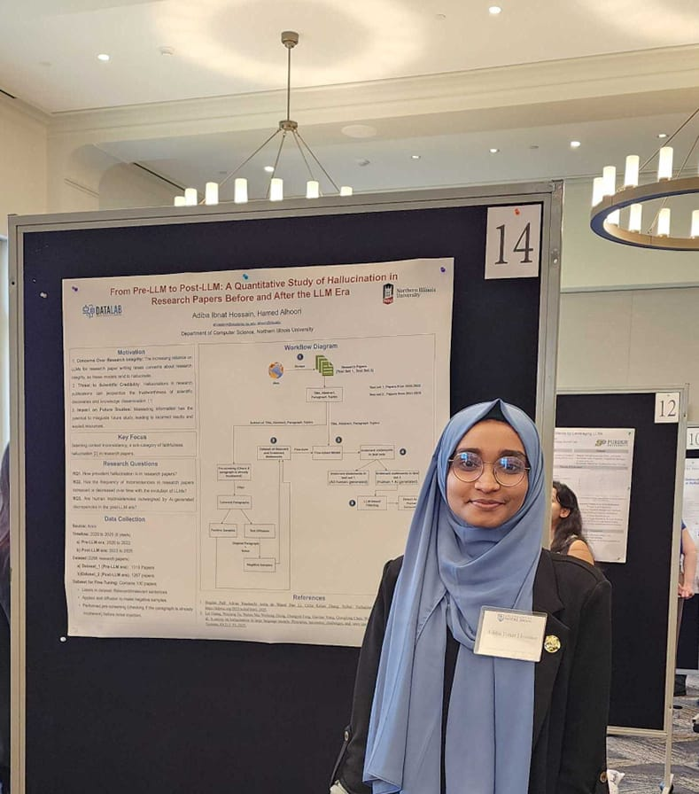

LLM Hallucination
Detecting, quantifying, and understanding unsupported or contextually inconsistent content produced by language models.
I am a Computer Science PhD student at Northern Illinois University. My research focuses on hallucination in large language models, scientific NLP, machine learning, and reliable multi-agent AI systems.

My work sits at the intersection of natural language processing, scientific communication, and AI reliability.
Detecting, quantifying, and understanding unsupported or contextually inconsistent content produced by language models.
Building datasets, evaluation methods, and language technologies for trustworthy scientific writing and scholarly knowledge tasks.
Studying how decomposed agentic workflows coordinate, propagate errors, and can be made more dependable.
A multi-granularity hallucination detection dataset for scientific writing, covering token-, sentence-, and paragraph-level phenomena.
Read on ACL Anthology ↗Identify contextual inconsistencies and hallucination patterns in scientific text.
Build evaluation resources for fine-grained hallucination detection.
Study AI workflows that generate grounded, reliable knowledge artifacts.
See the full publication list, research projects, and ways to connect.